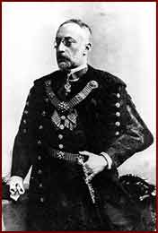

|  | |||
| As an economist and the managing director of the Hungarian General Credit Bank, Zsigmond Kornfeld played an important role in the public financial life of Hungary at the end of the 19th century. He was the president of the Stock Exchange, a member of the Upper House of the Parliament, and at the end of his life became a baron. He also took part in the life of the Jewish community. The picture shows him in festive Hungarian dress (díszmagyar). | |||